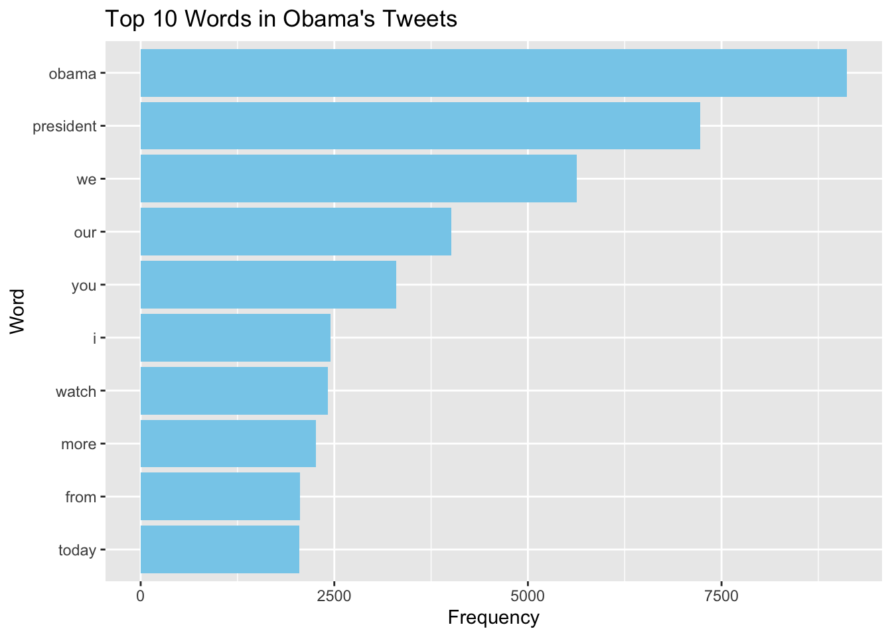
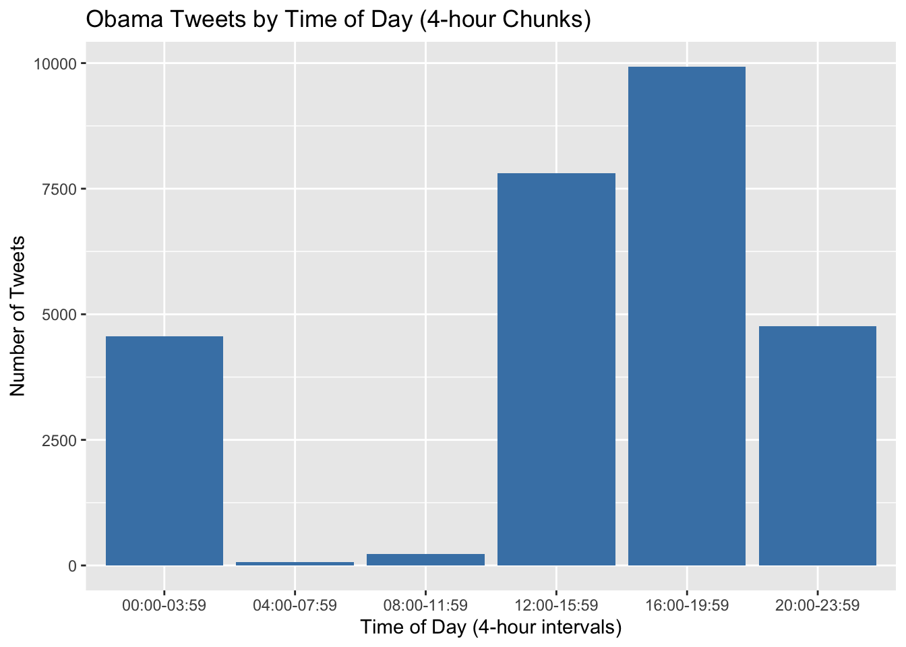
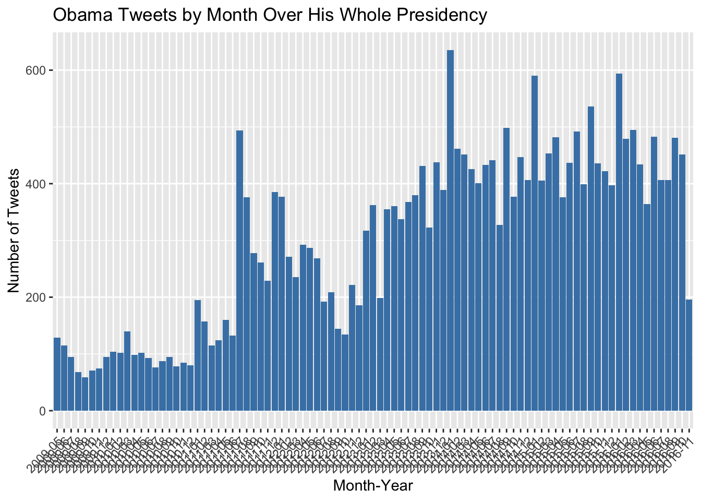
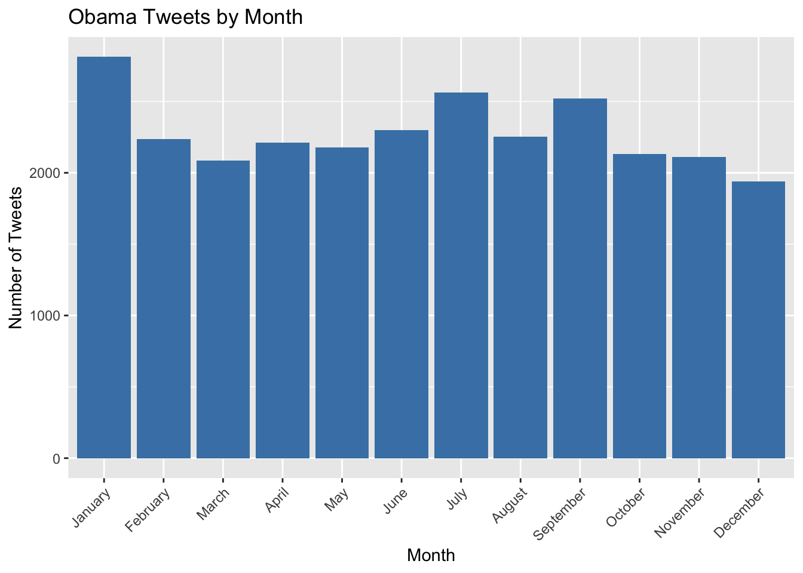

# A tibble: 27,346 × 10
tweet_id in_reply_to_status_id in_reply_to_user_id timestamp source text
<dbl> <dbl> <dbl> <chr> <chr> <chr>
1 7.99e17 NA NA 2016-11-16 1… "<a h… "\"N…
2 7.99e17 NA NA 2016-11-16 1… "<a h… "\"W…
3 7.99e17 NA NA 2016-11-16 1… "<a h… "\"T…
4 7.99e17 NA NA 2016-11-16 1… "<a h… "RT …
5 7.99e17 NA NA 2016-11-16 1… "<a h… "\"D…
6 7.99e17 NA NA 2016-11-16 1… "<a h… "\"W…
7 7.99e17 NA NA 2016-11-16 1… "<a h… "“In…
8 7.99e17 NA NA 2016-11-16 1… "<a h… "\"T…
9 7.99e17 NA NA 2016-11-16 1… "<a h… "“I …
10 7.99e17 NA NA 2016-11-16 1… "<a h… "\"P…
# ℹ 27,336 more rows
# ℹ 4 more variables: retweeted_status_id <dbl>,
# retweeted_status_user_id <dbl>, retweeted_status_timestamp <chr>,
# expanded_urls <chr>Obama
The data used in this analysis comes from the Obama Presidential Library, specifically from their Digital Research Room. It is publicly available at:
🔗 https://www.obamalibrary.gov/digital-research-room/archived-white-house-websites-and-social-media
The dataset is titled tweets.csv, which contains tweets posted from the official @POTUS Twitter account during President Barack Obama’s administration. The dataset includes columns such as the text of each tweet, timestamp, and other metadata.
This analysis focuses primarily on the text column, which contains the actual content of the tweets. The goal is to examine how often President Obama mentioned key policy topics, such as healthcare, climate change, and the economy, over the course of his presidency.

This graph illustrates which words Obama used most throughout his presidency in his tweets while not including “the”, “and”, “to”, “of”, “in”, “a”, “on”, “for”, “with”, “is”, “that”,“s”, “at”, “potus”, “rt”, “amp”, “it”,“this”, “are” and “→”. This graph is not especially helpful as the most used words are not very descriptive of what is going on in the tweets. What we can learn is that many of his tweets are about current news as he utilizes “today” heavily and they tend to be directed to a specific audience. By utilizing “we” and “our” it illustrates that Obama is not just sharing opinions but directing messages to the general public. I do not have a clear explanation why Obama and president are utilized so heavily although I assume that Obama tended to share quotes from himself or articles written which therefore would cite him.
# A tibble: 9 × 2
policy count
<chr> <int>
1 jobs 953
2 economy 661
3 tax 420
4 education 399
5 climate 318
6 gun 272
7 immigration 226
8 poverty 144
9 healthcare 46The number of times each of the following words is found exactly like this in unique tweets. Eliminates taxpayers and other additions to the words. I decided to create this plot because it highlighted which political themes he addressed most heavily in his tweets and is much more useful than the earlier utilized graph. The top three results are heavily tied together so I am not surprised to see them at the top as I am sure they would all appear together in each unique tweet.
obamatime <- obamaa |>
# Split the timestamp into date, time, timezone
separate(timestamp, into = c("date", "time", "timezone"), sep = "\\s+") |>
# Clean the time column to keep only HH:MM:SS (remove any stray characters just in case)
mutate(time = str_replace_all(time, "[^0-9:]", "")) |> # Regular expression cleaning
# Parse time into an HMS object and create hour and time_chunk columns
mutate(tlsime = hms(time),
hour_of_day = hour(tlsime),
time_chunk = cut(hour_of_day, breaks = seq(0, 24, by = 4),
labels = c("00:00-03:59", "04:00-07:59", "08:00-11:59",
"12:00-15:59", "16:00-19:59", "20:00-23:59"),
include.lowest = TRUE)) |>
mutate(time_chunk = factor(time_chunk, levels = c("00:00-03:59", "04:00-07:59", "08:00-11:59",
"12:00-15:59", "16:00-19:59", "20:00-23:59"))) |> # Fix order explicitly
arrange(time_chunk) # Arrange based on the time chunk order
# Now count the tweets by time of day
tweetsbytime <- obamatime |>
count(time_chunk) # Count tweets by time chunk
# Plot the number of tweets by time of day
tweetsbytime |>
ggplot(aes(x = time_chunk, y = n)) +
geom_col(fill = "steelblue") +
labs(title = "Obama Tweets by Time of Day (4-hour Chunks)",
x = "Time of Day (4-hour intervals)",
y = "Number of Tweets")
obamatime <- obamatime |>
mutate(date = as.Date(date)) # Convert date to Date class if it's not already
# Extract the month and year from the date and count the tweets by month
tweetsbymonth <- obamatime |>
mutate(month_year = format(date, "%Y-%m")) |> # Create a column for Year-Month
count(month_year) # Count the tweets by month-year
# Plot the number of tweets per month
tweetsbymonth |>
ggplot(aes(x = month_year, y = n)) +
geom_col(fill = "steelblue") +
labs(title = "Obama Tweets by Month Over His Whole Presidency",
x = "Month-Year",
y = "Number of Tweets") +
theme(axis.text.x = element_text(angle = 45, hjust = 1)) # Rotate x-axis labels for better readability
tweetsbymonth <- obamatime |>
mutate(month = format(date, "%m")) |> # Extract the month (as numeric)
count(month) # Count the tweets by month
# Plot the number of tweets per month (grouped by month)
tweetsbymonth |>
ggplot(aes(x = month, y = n)) +
geom_col(fill = "steelblue") +
labs(title = "Obama Tweets by Month",
x = "Month",
y = "Number of Tweets") +
scale_x_discrete(labels = c("01" = "January", "02" = "February", "03" = "March",
"04" = "April", "05" = "May", "06" = "June",
"07" = "July", "08" = "August", "09" = "September",
"10" = "October", "11" = "November", "12" = "December")) +
theme(axis.text.x = element_text(angle = 45, hjust = 1)) # Rotate x-axis labels for better readability